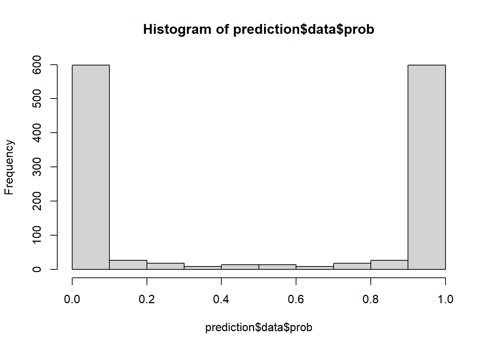

if (!require("mlr3calibration")) {
remotes::install_github("AdriGl117/mlr3calibration")
}
library(mlr3calibration)
library(mlr3verse)
library(mlr3learners)
set.seed(12345)Goal
Our goal for this exercise sheet is to learn the basics of model calibration for supervised classification with mlr3calibration. In a calibrated model, the predicted probability for an input feature vector can be interpreted as the true likelihood of the outcome belonging to the positive class, meaning that among all instances assigned a probability of \(p\), approximately \(p\%\) will belong to the positive class.
Required packages
We will use mlr3 for machine learning, and mlr3calibration specifically for calibration:
Data: predicting cell segmentation quality
The modeldata package contains a data set called cells. Initially distributed by Hill and Haney (2007), they showed how to create models that predict the quality of the image analysis of cells. The outcome has two levels: "PS" (for poorly segmented images) or "WS" (well-segmented). There are 56 image features that can be used to build a classifier.
Let’s load the data and remove an unwanted column:
library(modeldata)
data(cells, package = "modeldata")
cells$case <- NULL1 Checking cardinality properties
1.1 Creating a split
First, define a task object for the cells data set. Then, create a simple train-test split on the task to reserve test data for performance evaluation later on. As result, there should be a cells_train and a cells_test..
Hint 1:
You can use partition() on a given task object to create simple train-test split.
NoteSolution
1.2 Training a Naive Bayes model
We’ll show the utility of calibration tools by using a type of model that, in this instance, is likely to produce a poorly calibrated model. The Naive Bayes classifier is a well-established model that assumes that the predictors are statistically independent of one another (to simplify the calculations). While that is certainly not the case for this data, the model can be effective at discriminating between the classes. Unfortunately, when there are many predictors in the model, it has a tendency to produce class probability distributions that are pathological. The predictions tend to gravitate to values near zero or one, producing distributions that are “U”-shaped (Kuhn and Johnson, 2013).
To demonstrate, let’s set up a Naive Bayes learner and train it using the training data.
Hint 1:
First, create and train the learner.
NoteSolution
1.3 Predicting on unseen test data
Next, use the trained model to predict on unseen test data. In mlr3, this will return two columns of predicted probabilities, one for "PS" and one for "WS".
Hint 1:
You can use this code skeleton to produce the desired output:
learner$predict(...)
NoteSolution
1.4 Assessing model performance
We want to use two metrics to judge how well the model performs. First, the area under the ROC curve (ROC AUC) is used to measure the ability of the model to separate the classes (its mere ability to discriminate correctly). Second, the Brier score is used to measure how close the probability estimates are to the actual outcome values (its ability to express confidence in the label predictions). Compute the ROC AUC and the Brier Score on the test data predictions.
NoteSolution
1.5 Assessing model calibration
Let’s assess if our model is well-calibrated. Spoiler: it is not. The first clue is the extremely U-shaped distribution of the probability scores:
hist(prediction$data$prob, breaks = (0:10)/10)
There are almost no cells with moderate probability estimates.
Then, assess if the model is calibrated with calibrationplot(). The calibration plot shows the relationship between the predicted probabilities and the true outcomes. The plot is divided into bins, and within each bin, the mean predicted probability and the mean observed outcome are calculated. The calibration plot can be smoothed by setting smooth = TRUE.
Hint 1:
calibrationplot() requires a list of learners even if the list contains only one argument.
NoteSolution
1.6 Platt Scaling
The good news is that we can do something about this. There are tools to “fix” the probability estimates so that they have better properties, such as falling along the diagonal lines in the diagnostic plots shown above. Different methods improve the predictions in different ways.
The most common approach is Platt scaling, also called logistic calibration. This works in the following way: The original model is used to predict on the validation data set, returning predicted probabilities. We already know these probabilities are off, i.e., not well-calibrated. Then, we fit a simple logistic regression model, using the predicted probabilities from the original model as “x/feature” and the true labels as “y/target”. In this way, we stack a second model on top of the first one: Original Model -> Probabilities -> Logistic Regression Model -> Calibrated Probabilities.
If effective, the logistic regression model estimates the probability regions where the original model is off (as shown in the diagnostic plot). For example, suppose that when the model predicts a 2% event rate, the logistic regression model estimates that it under-predicts the probability by 5% (relative to the observed data). Given this gap, new predictions are adjusted up so that the probability estimates are more in-line with the data.
In mlr3calibration, to calibrate a learner you need a base learner (which will fit a model that is calibrated afterwards), a resampling strategy, and a calibration method (Platt, Beta or Isotonic). Initialize 1) another Naive Bayes base learner, 2) a holdout resampling object, and 3) a calibration strategy. The calibration strategy in mlr3calibration is implemented as PipeOpCalibration object. It requires the base learner (learner), the calibration method (method), and the resampling method (rsmp) as arguments to be initialized. Practically, we want to use the calibration strategy as learner, so we have to express the pipeline operator within as_learner(). After that, set learner_cal$id <- "Platt Calibrated Learner" for later reference.
Hint 1:
learner_uncal = ...
rsmp = ...
learner_cal = as_learner(PipeOpCalibration$new(...))
learner_cal$id <- "Platt Calibrated Learner"Hint 2:
Check the documentation of PipeOpCalibration with ??PipeOpCalibration.
NoteSolution
The calibrated learner can be trained on a task as any other learner. Train the learner on cells_train. Afterwards, plot the calibration plot again, comparing the uncalibrated Naive Bayes model with the Platt-scaled Naive Bayes model.
NoteSolution
2 Isotonic regression
A different approach to calibration is to use isotonic regression. In a manner similar to logistic calibration, use mlr3 to calibrate the Naive Bayes model using isotonic regression. Do we improve the calibration in comparison to Platt scaling?
Hint 1:
learner_uncal = ...
rsmp = ...
learner_cal = as_learner(PipeOpCalibration$new(...))
learner_cal$id <- "Isotonic Calibrated Learner"
learner_cal$train(cells_train)
# Did we improve?
prediction_iso = ...
measures = ...
prediction_iso$score(measures)
calibrationplot(...)
NoteSolution
3 Resamping for Calibration with mlr3
PipeOpCalibration can be treated as any other PipeOp object. Therefore, we can use them within more complex tuning and pipeline constructs, i.e. in cross-validation (CV), to assess calibration methods.
Fit 10 Naive Bayes models using 10-fold CV and calibrate each of these models using beta calibration, another calibration method.
Hint 1:
You can use the following code skeleton, detailing the required steps:
pipeline_cal = as_learner(PipeOpCalibration$new(learner = ...,
rsmp = ...,
method = ...))
pipeline_cal$id <- "Beta Calibrated Learner"
pipeline_cal$...
calibrationplot(..., smooth = TRUE)
NoteSolution
Summary
In this exercise sheet we learned how to fit a classification model on a training task and how to assess its performance on unseen test data with the help of mlr3. We showed how to split data manually into training and test data, and use mlr3 to assess if a model is calibrated. We discussed how Platt scaling/logistic calibration and isotonic regression can be used to improve calibration (although not perfectly calibrate the model here).